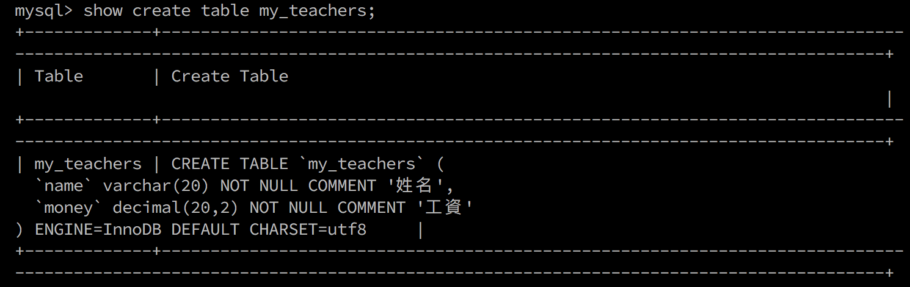

Tinyint：迷你整型，使用一個字節存儲，表示的狀態最多為256種（常用）Smallint：小數型：使用兩個字節存儲，表示的狀態最多為65536種Mediumint：中整型，使用三個字節存儲Int：標準整型，使用四個字節存儲（常用）Bigint：大整型，使用八個字節存儲| 類型 | 字節 | 最小值(有符號/無符號) | 最大值(有符號/無符號) |
|---|---|---|---|
| TINYINT | 1 | -128/0 | 127/255 |
| SMALLINT | 2 | -32768/0 | 32767/65535 |
| MEDIUMINT | 3 | -8388608/0 | 8388607/16777215 |
| INT/INTEGE | 4 | -2147483648/0 | 2147483647/4294967295 |
| BIGINT | 8 | -9223372036854775808/0 | 9223372936854775807/18446744073709551615 |
.eg
1 | # 創建整型表 |
SQL中的數值類型全部都是默認有符號：分正負
有時候需要使用無符號數據：需要給數據類型限定：int unsigned; – 無符號，從0開始
1 | # 給表添加一個無符號類型 |
查看表結構的時候，發現每個字段的數據類型之後都會自帶一個括號，裡面有指定的數字
其作用：是數據最終顯示的位數如：-123是4位顯示寬度（包含符號）沒有特別的含義，只是默認顯示的告訴用戶可以顯示的形式而已，實際上用戶是可以控制的，這種控制不會改變數據本身的大小
1 | alter table my_int add int_6 tinyint(1) unsigned; -- 指定顯示寬度為1； |
顯示寬度的意義：在於當數據不夠顯示寬度的時候，會自動讓數據變成對應的顯示寬度；通常需要搭配一個前導0來增加寬度，不改變值大小：zerofill(零填充)，零填充會導致數值自動變成無符號
1 | alter table my_int add int_7 tinyint(2) zerofill; -- 顯示寬度為2，0填充 |
零填充的意義（顯示寬度）：保證數據格式
SQL中：將小數型細分為兩種：浮點型和定點型
浮點型：
Float:但精度，佔用4個字節存儲數據，精度範圍大概為7位左右Double:雙精度，佔用8個字節存儲數據，精度範圍大概為15位左右創建浮點數表：直接float表示沒有小數部分；float(M,D):M代表總長度，D代表小數部分長度，整數部分長度位M-D
1 | # 創建浮點數表 |
插入數據：可以是直接小數，也可以是科學計數法
1 | # 插入數據 |
浮點型數據的插入：整型部分是不能超出長度的，單小數部分可以超出長度（系統會自動四捨五入）
1 | # 超出長度插入數據 |
結果：浮點數一定會進行四捨五入（超出精度範圍）：浮點數如果是應為系統進位導致整數部分超出指定的長度，那麼系統也允許成立
| 類型 | 存儲空間(字節) | 最小值(理論) | 最大值(理論) |
|---|---|---|---|
| DECIMAL | 變長，大致是每9個數字，採用4個字節存儲 整數和小數分開計算 | M, 最大是65 D, 最大是30 默認是10, 2 - (65個9) | (+ 65個9) |
創建定點數表：以浮點數作為對比
1 | create table if not exists my_decimal( |
插入數據：定點數的整數部分一定不能超出長度（進位不可以），小數部分的長度可以隨意超出（系統自動四捨五入）
1 | insert into my_decimal values(12345678.90, 12345678.90); -- 有效數據 |
查看警告：show warnings;
浮點數如果進位導致長度溢出沒有問題，但是定位數不行
1 | insert into my_decimal values(99999999.99, 99999999.99); -- 沒有問題 |
查看數據效果

Datatime：時間日期類型，格式是YYYY-mm-dd HH:ii:ss; 表示的範圍是從1000到9999年，有0值：0000-00-00 00:00:00Date：日期，就是datetime中的date部分Time：時間段，指定的某個區間之間，-時間 +時間TimeTamp：時間戳，並不是時間戳，只是從1970年開始的YYYY-mm-dd HH:ii:ss 格式與datetime完全一致Year：年份，兩種形式，year(2)和year(4)：表示1901年到2155年| 類型 | 顯示格式 | 取值 | 存儲空間 | 零值 |
|---|---|---|---|---|
| DATETIME | YYYY-mm-dd HH:mm:ss | ‘1000-01-01 00:00:00’到’9999-12-31 23:59:59’ | 8 | 00000-00-00 00:00:00 |
| TIMESTAMP | YYYY-mm-dd HH:mm:ss | 是’1970-01-01 00:00:00’到’2038-01-19 03:14:07’ | 4 | 0000-00-00 00:00:00 |
| DATE | YYYY-mm-dd | ‘1000-01-01’到’9999-12-31’ | 3 | 0000-00-00 |
| TIME | HH:mm:ss | ‘-838:59:59’到’838:59:59’ | 3 | 00:00:00 |
| YEAR | YYYY | 1901到2155 | 1 | 0000 |
創建時間日期表
1 | create table if not exists my_date( |
插入數據：時間time可以為負數，而且可以是很大的負數，year可以使用2位數插入，也可以使用4位數
1 | insert into my_date values('2015-10-01 11:33:56', '2015-06-12', '11:33:56', '2015-10-01 11:33:56', 2015); |
1 | # 時間使用負數 |
1 | # year可以使用2位或者4位 |
1 | # timesTamp: 修改紀錄 |
date，只需要一個時間戳就可以轉換成任意類型的時間：以PHP為主的時候，都是在數據庫使用時間戳（整型）來存儲時間char, varchar, text, blob, enum 和 setChar(L):L代表length，可以存儲的長度，單位為字符，最大長度值可以為255Char(4):在UTF8環境下，需要4 * 3 = 12個字節Varchar(L):L代表字符長度 理論長度是65536個字節，但是會多出1到2個字節來確定存儲的實際長度；但是實際上如果長度超過255，既不用定長也不用變長，使用文本字節textVarchar(10):的確存了10個漢字，utf8環境，10 3 + 1 = 31(bytes)；存儲3個漢字 3 3 + 1 =10(bytes)| 實際存儲數據 | Char(4) | Varchar(4) | Char占用字節 | Varchar占用字節 |
|---|---|---|---|---|
| ABCD | ABCD | ABCD | 4 * 3 = 12 | 4 * 3 + 1 = 13 |
| A | A | A | 4 * 3 = 12 | 1 * 3 + 1 = 4 |
| ABCDE | ❌ | ❌ | 數據超過長度 | 數據超過長度 |
Text:存儲文字（二進制數據實際上都是存儲路徑）Blob:存儲二進制數據（一般不用）1 | # 創建枚舉表 |
1 | # 插入數據 |
enum作用：
證明字段存儲的數據是數值：將數據取出來 + 0，就可以判斷出原來的數據存的到底是字符串還是數值，如果是字符串最終結果永遠為0，否則就是其他值
1 | # 將字段結果取出進行 +0 運算 |
1 | # 數值插入枚舉元素 |
1 | # 創建集合分類 |
1 | # 插入數據 |
1 | # 求出varchar在utf8和GBK下的實際最大值 |
1 | # 求出varchar在utf8和GBK下的實際最大值 |
1 | # 求出varchar在utf8和GBK下的實際最大值 |
1 | create table if not exists my_utf8_1( |
1 | # 釋放NULL |

1 | # text 占用是個字節長度 |
NULL/NOT NULL, default, Primary key, unique key, auto_increment, commentNULL（默認的）和NOT NULL（不為空）1 | # 創建一個實際案例表：班機表（名字，教室） |
1 | create table if not exists my_teachers( |

####默認值
默認值關鍵字：default
1 | create table if not exists my_default( |
默認值的生效：使用，在數據進行插入的時候，不給該字段賦值
1 | insert into my_default (name) values('Vincent'); |

1 | insert into my_default values('Eli', default); |